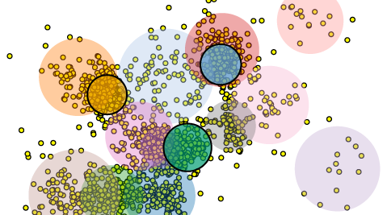

Nakwon Rim / 임낙원
I am a Ph.D. student working with Marc G. Berman and James A. Evans at the University of Chicago. I am broadly interested in how people compress information about the world, how this information compression shapes our cognitive processes, and how people deliver these compressed informations to others.
I received my M.A. in Computational Social Science at the University of Chicago, and B.A. in Psychology and B.S. in Brain Cognitive Science from Korea University in Seoul, Republic of Korea.
CV / Twitter / Google Scholar / Github
Publications
